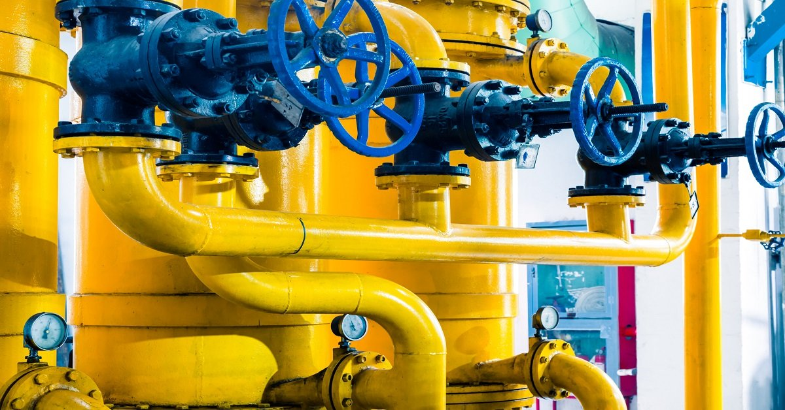
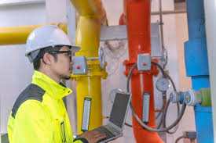
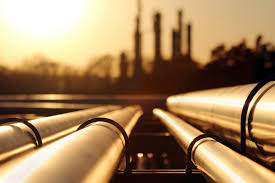
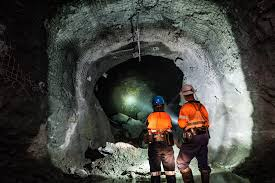
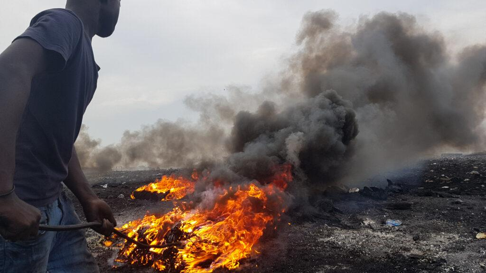

We deliver comprehensive gas monitoring solutions designed to meet the stringent requirements of various industries. Our advanced systems provide accurate and reliable detection of hazardous gases, ensuring the safety of your workforce and compliance with environmental regulations. Committed to innovation and excellence, AIPL offers state-of-the-art environmental gas monitoring technologies that help you maintain a safe and compliant operational environment.

Gas monitoring solutions are essential systems used to detect and measure the presence of hazardous gases in various environments. These solutions are crucial for ensuring safety, compliance, and operational efficiency in industries such as manufacturing, mining, oil and gas, healthcare, and environmental protection. The primary objective of gas monitoring is to provide early detection of gas leaks or accumulations, enabling timely responses to prevent accidents, health hazards, and environmental damage.
We utilize the latest technology to deliver highly accurate and reliable gas monitoring solutions, ensuring optimal performance.
Our team works closely with you to develop tailored solutions that meet your specific gas monitoring needs and regulatory requirements.
From installation to maintenance and technical support, we provide extensive services to ensure the effective operation of your gas monitoring systems.
We offer competitively priced solutions without compromising on quality, ensuring you receive the best value for your investment.
AIPL is dedicated to supporting your sustainability goals by providing solutions that help reduce environmental impact and enhance operational safety.

Monitor and control gas emissions in factories, refineries, and chemical plants to ensure safety and regulatory compliance.

Detect leaks and monitor gas levels in drilling, production, and processing operations to prevent accidents and environmental damage.

Ensure the safety of miners by monitoring hazardous gases such as methane and carbon monoxide in underground and surface mining operations.

Monitor gas emissions from waste treatment and disposal facilities to minimize environmental impact and enhance safety.
Ensure a safe working environment in research and testing laboratories by monitoring toxic and flammable gases.